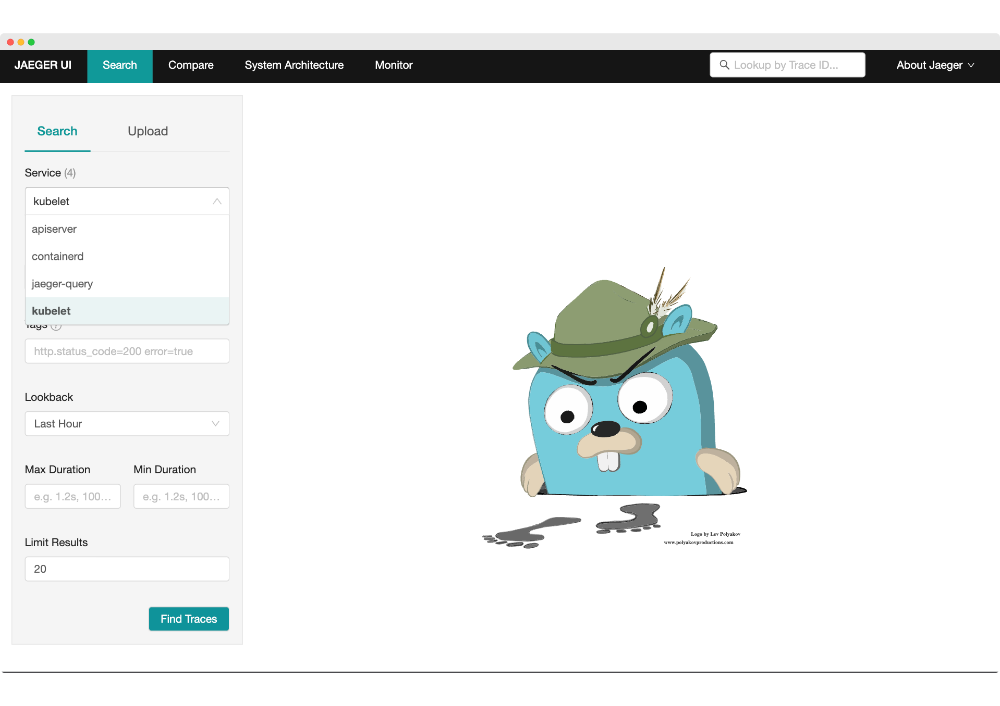
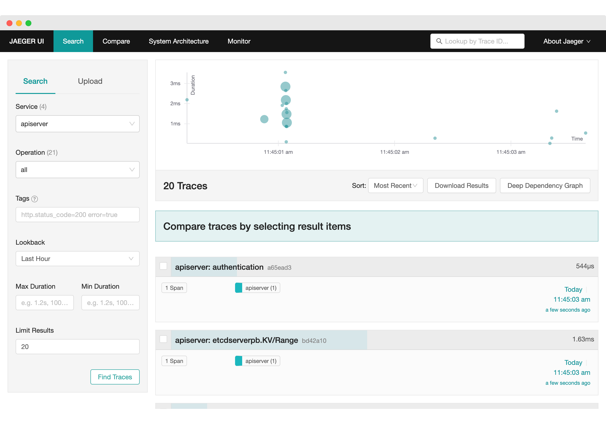
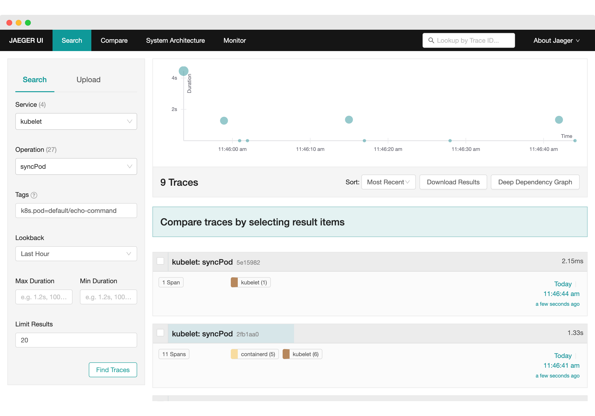
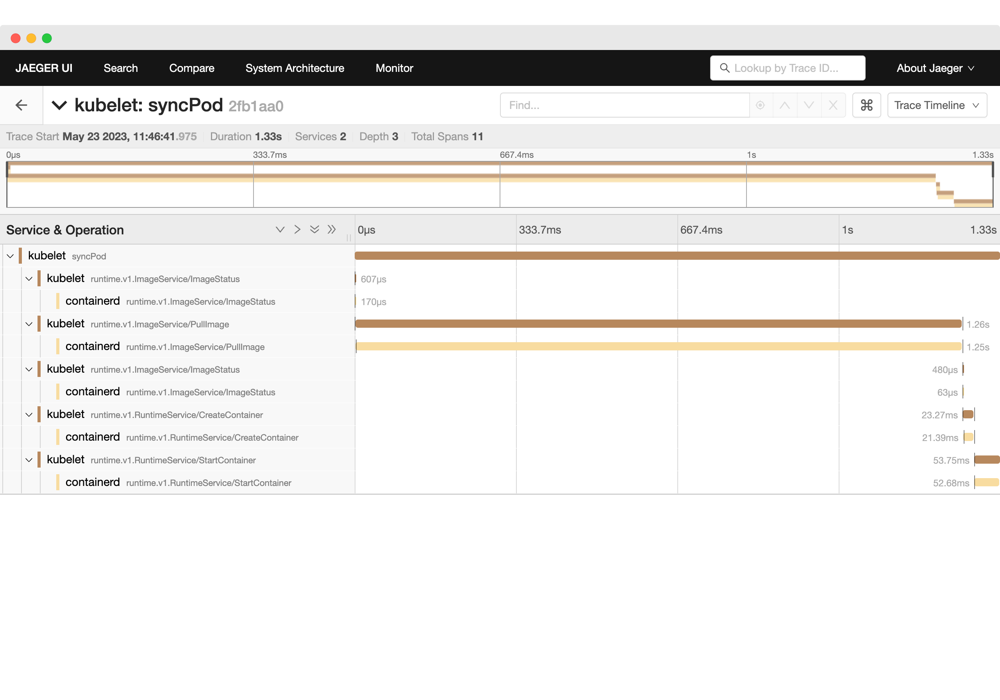

Creating a Kubernetes Cluster with Runtime Observability
With contributions from Sebastian Choren, Adnan Rahić and Ken Hamric.
Kubernetes is an open source system widely used in the cloud native landscape to provide ways to deploy and scale containerized applications in the cloud. Its ability to observe logs and metrics is well-known and documented, but its observability regarding application traces is new.
Here is a brief synopsis of the recent activity in the Kubernetes ecosystem:
- The first discussions started in December 2018 with a first PR on implementing instrumentation.
- A KEP (Kubernetes Enhancement Proposal) was created in January 2020 and later scoped to API Server (KEP 647 - API Server Tracing), while a new KEP for Kubelet was proposed in July 2021 (KEP 2831 Kubelet Tracing).
- etcd (Kubernetes uses it as an internal datastore) started to discuss tracing in November 2020 (here) and had a first version merged in May 2021.
- containerd and CRI-O, two Container Runtime Interfaces for Kubernetes, started to implement tracing in 2021 (April 2021 for CRI-O and August 2021 for containerd).
- API Server tracing was released as alpha in v1.22 (Aug. 2021) and beta in v1.27 (Apr. 2023).
- Kubelet tracing was released as alpha in v1.25 (Aug. 2022) and beta in v1.27 (Apr. 2023).
In investigating the current state of tracing with Kubernetes, we found very few
articles documenting how to enable it, like this
article on Kubernetes blog
about kubelet observability. We decided to document our findings and provide
step-by-step instructions to set Kubernetes up locally and inspect traces.
You’ll learn how to use this instrumentation with Kubernetes to start observing traces on its API (kube-apiserver), node agent (kubelet), and container runtime (containerd) by setting up a local observability environment and later doing a local install of Kubernetes with tracing enabled.
First, install the following tools on your local machine:
- Docker: a container environment that allows us to run containerized environments
- k3d: a wrapper to run k3s (a lightweight Kubernetes distribution) with Docker
- kubectl: a Kubernetes CLI to interact with clusters
Setting up an Observability Stack to Monitor Traces¶
To set up the observability stack, you’ll run the OpenTelemetry (OTel) Collector, a tool that receives telemetry data from different apps and sends it to a tracing backend. As a tracing backend, you’ll use Jaeger, an open source tool that collects traces and lets you query them.
On your machine, create a directory called kubetracing and create a file
called
otel-collector.yaml,
copy the contents of the following snippet, and save it in a folder of your
preference.
This file will configure the OpenTelemetry Collector to receive traces in OpenTelemetry format and export them to Jaeger.
After that, in the same folder, create a docker-compose.yaml file that will have two containers, one for Jaeger and another for the OpenTelemetry Collector.
Now, start the observability environment by running the following command in the
kubetracing folder:
This will start both Jaeger and the OpenTelemetry Collector, enabling them to receive traces from other apps.
Creating a Kubernetes Cluster with Runtime Observability¶
With the observability environment set up, create the configuration files to
enable OpenTelemetry tracing in kube-apiserver, kubelet, and containerd.
Inside the kubetracing folder, create a subfolder called config that will
have the following two files.
First, the
apiserver-tracing.yaml,
which contains the tracing configuration used by kube-apiserver to export
traces containing execution data of the Kubernetes API. In this configuration,
set the API to send 100% of the traces with the samplingRatePerMillion config.
Set the endpoint as host.k3d.internal:4317 to allow the cluster created by
k3d/k3s to call another API on your machine. In this case, the OpenTelemetry
Collector deployed via docker compose on port 4317.
The second file is
kubelet-tracing.yaml,
which provides additional configuration for kubelet. Here you’ll enable the
feature flag KubeletTracing (a beta feature in Kubernetes 1.27, the current
version when this article was written) and set the same tracing settings that
were set on kube-apiserver.
Returning to the kubetracing folder, create the last file,
config.toml.tmpl,
which is a template file used by k3s to configure containerd. This file is
similar to the default configuration that k3s uses, with two more sections at
the end of the file that configures containerd to send traces.
1 2 3 4 5 6 7 8 9 10 11 12 13 14 15 16 17 18 19 20 21 22 23 24 25 26 27 28 29 30 31 32 33 34 35 36 37 38 39 40 41 42 43 44 45 46 47 48 49 50 51 52 53 54 55 56 57 58 59 60 61 62 63 64 65 66 67 68 69 70 71 72 73 74 75 76 77 78 79 80 81 82 83 84 85 86 87 88 89 90 91 92 93 94 95 96 97 98 99 100 101 102 103 104 105 106 107 108 109 110 111 112 113 114 115 116 117 118 119 120 121 122 123 124 125 126 | |
After creating these files, open a terminal inside the kubetracing folder and
run k3d to create a cluster. Before running this command, replace the
[CURRENT_PATH] placeholder for the entire path of the kubetracing folder.
You can retrieve it by running the echo $PWD command in the terminal in that
folder.
This command will create a Kubernetes cluster with version v1.17.1, and set up
in three docker containers on your machine. If you run the command
kubectl cluster-info now, you will see this output:
Going back to the logs of the observability environment, you should see some spans of internal Kubernetes operations being published in OpenTelemetry Collector, like this:
Testing the Cluster Runtime¶
With the Observability environment and the Kubernetes cluster set up, you can now trigger commands against Kubernetes and see traces of these actions in Jaeger.
Open the browser, and navigate to the Jaeger UI located at
http://localhost:16686/search. You’ll see that the apiserver, containerd,
and kubelet services are publishing traces:

Choose apiserver and click on "Find Traces”. Here you see traces from the
Kubernetes control plane:

Let’s run a sample command against Kubernetes with kubectl, like running an
echo:
And now, open Jaeger again, choose the kubelet service, operation syncPod,
and add the tag k8s.pod=default/echo-command, you should be able to see spans
related to this pod:

Expanding one trace, you’ll see the operations that created this pod:

Conclusion¶
Even in beta, both traces for kubelet and apiserver can help a developer understand what’s happening under the hood in Kubernetes and start debugging issues.
This will be helpful for developers that create custom tasks, like Kubernetes Operators that update internal resources to add more functionalities to Kubernetes.
As a team focused on building an open source tool in the observability space, the opportunity to help the overall OpenTelemetry community was important to us. That’s why we were researching finding new ways of collecting traces from the core Kubernetes engine. With the current level of observability being exposed by Kubernetes we wanted to publish our findings in order to help others interested in seeing the current state of distributed tracing in the Kubernetes engine. Daniel Dias and Sebastian Choren are working on Tracetest, an open-source tool that allows you to develop and test your distributed system with OpenTelemetry. It works with any OTel compatible system and enables trace–based tests to be created. Check it out at https://github.com/kubeshop/tracetest.
The example sources used in this article, and setup instructions are available from the Tracetest repo.